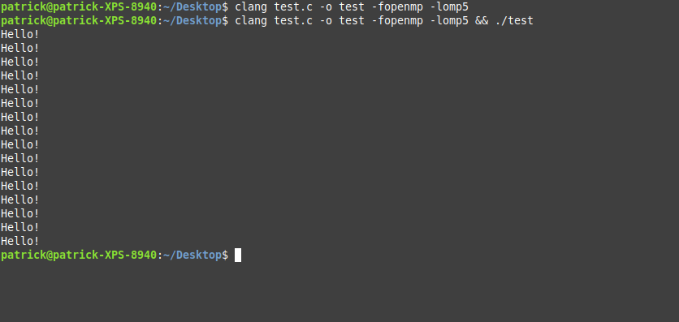
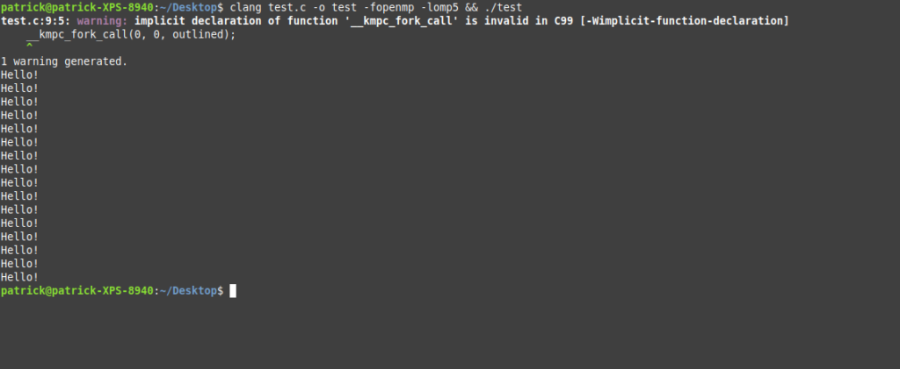
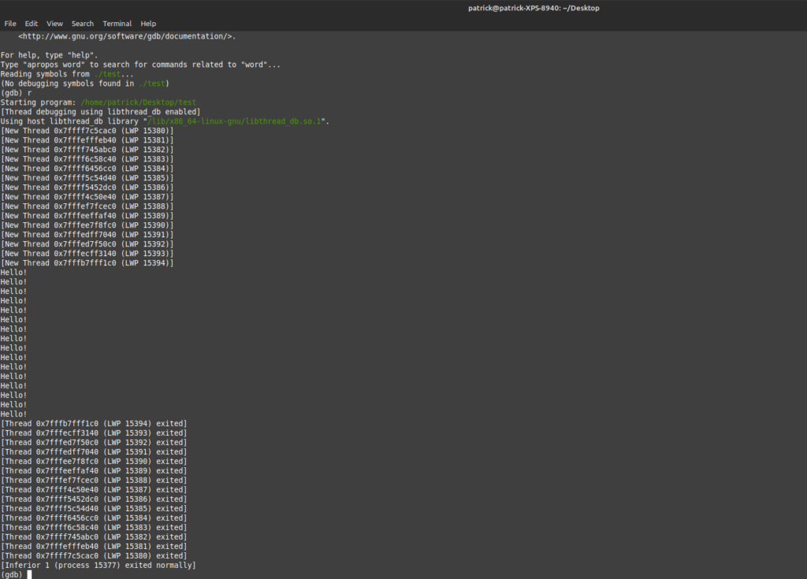
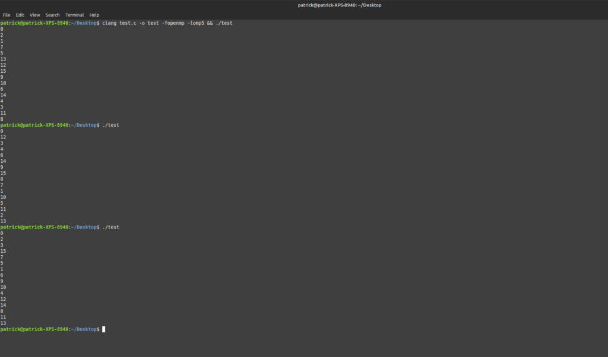
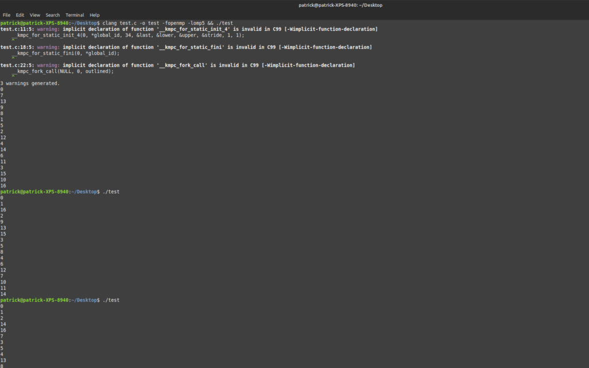
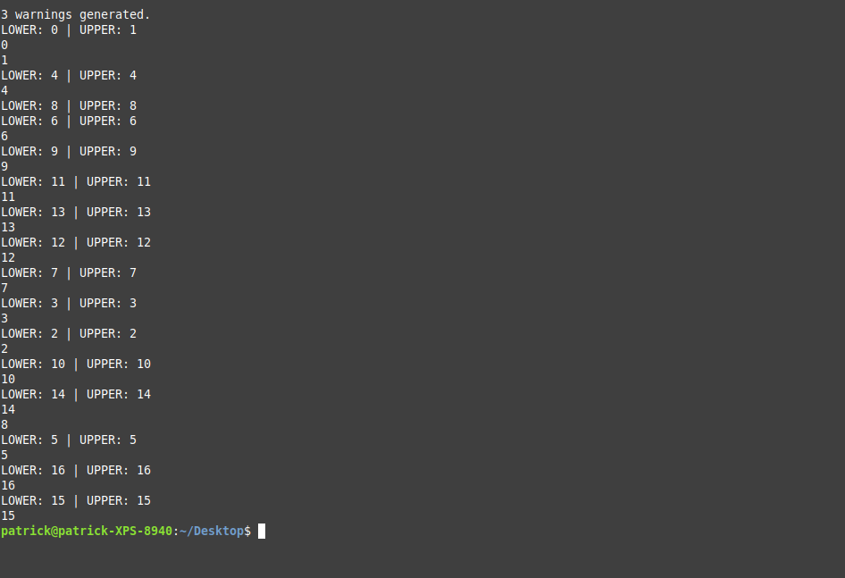
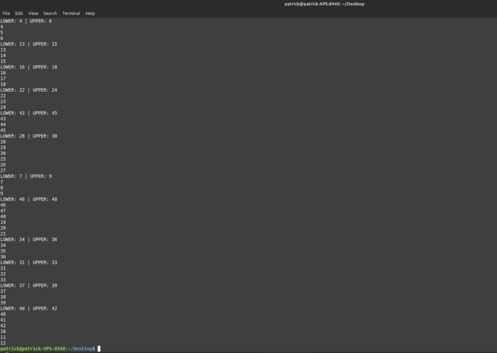

How To: OpenMP with LLVM Runtime
It was very tempting to start this post with an opinion on OpenMP, but I decided to shut up for once and right something relatively non-controversial (by controversial, both liking and disliking OpenMP will be controversial to someone). I do a lot of OpenMP-related work in my school job, and lately I've been doing a project that's somewhat OpenMP based. I'm not going into the details right now, but suffice it to say that I needed a parallel runtime system, and since I was already using LLVM, I decided to dive into the LLVM OpenMP runtime system.
(Note: I'm going to refer to the LLVM OpenMP runtime system as KMPC in this tutorial so I don't have to type out "LLVM OpenMP runtime system." That takes time, and that time adds up.)
While I really love LLVM, I really think the LLVM documentation is lacking. The Doxygen docs are okayish- by okayish, if you already know what you're doing, the docs are good enough to figure out how to use LLVM. But of course, I'm only talking about LLVM- not any of the myriad of tools within the project. The KMPC project is the perfect example. In this case, there is absolutely no documentation. There once was, about a year ago, but it was this Latex generated list of function calls that made some vague sense, but that was stretching it. But anyway, if you want to use KMPC, you're pretty much stuck reverse engineering LLVM IR output. For that, I would recommend compiler explorer.
I couldn't find any good references out there, so I'm going to try and document how to use KMPC for anyone out there who may wish to use it. This is the first set of tutorials, and here I outline basic parallelism, parallel for, and parallel for with shared variables.
Let's begin!
Basic Parallel
Consider this example:
#include <stdio.h>
int main() {
#pragma omp parallel
puts("Hello!");
return 0;
}
If you compile and run it, you should get something like this (it will depend on your CPU count):

Needless to say, this is pretty straightforward. If you indicate a section of code as "parallel" with OpenMP, it will simply take that section and parallelize it, running it on as many CPU threads as available. You can control it with an environment variable, but that's irrelevant- research it yourself, it's in the OpenMP spec.
So how is this done in the code?
The handwritten equivalent of the example above would be this:
#include <stdio.h>
#include <omp.h>
void outlined(int *global_id, int *bound_id) {
puts("Hello!");
}
int main() {
__kmpc_fork_call(0, 0, outlined);
return 0;
}
If all goes well, you should get the same output as above. Note that if the compiler complains about an implicit function call with any of the "kmpc" functions, you can ignore that:

As you can see, the output and behavior is exactly the same. So how does this work?
The entry to KMPC is the "__kmpc_fork_call" function. This will do all the appropriate thread scheduling. It takes three arguments: 1) an information structure, 2) the number of function arguments, and 3) an outlined function. You can set argument 1 to "0" or "NULL" for now. We'll come back to argument 2, but for now just set it to 0. Argument 3 is the name of your outlined function.
The outlined function is what gets called and run in the runtime system. Every OpenMP (or at least KMPC) outlined function takes two pointers as arguments: global_id, and bound_id. What are they for? Not sure. I'm 99% sure global_id indicates the current thread, but I could be completely wrong. They aren't needed right now, so I don't know and I don't care :). Also, make sure the outlined function is "void". Any function with this signature can be passed to "__kmpc_fork_call.".
How do I know it's working? Run the program with gdb:

That was cool right? Okay, let's move on to something more useful.
Parallel For
The primary construct you need for parallel programming is a for loop. With a for loop, you can see the upper and lower bounds of the loop, see what work needs to be done, and schedule accordingly to the resources available.
Let's consider a new example in OpenMP:
#include <stdio.h>
int main() {
#pragma omp parallel for
for (int i = 0; i<16; i++) {
printf("%d\n", i);
}
return 0;
}
If you build and run it, you should see all the numbers printed 0-15:

Take a good look at the image though. Notice that the numbers are out of order, and appear differently in every time you run it. This is because each thread is tasked with printing one of those numbers. The fact that they are all out of order, and appear in a different order every time, shows us that our threading is working. By the way, notice the "for" in the omp pragma in the example above. This tells the runtime system to schedule the for loop across threads. If you left out the "for" and just did "omp parallel", it would run that entire for loop on each thread.
Anyway, how would we convert this to a KMPC program? The answer: like this:
#include <stdio.h>
#include <omp.h>
void outlined(int *global_id, int *bound_id) {
int lower = 0;
int upper = 16;
int stride = 1;
int last = 0;
int i = 0;
__kmpc_for_static_init_4(0, *global_id, 34, &last, &lower, &upper, &stride, 1, 1);
if (upper > 16) upper = 16;
for (i = lower; i <= upper; i += 1) {
printf("%d\n", i);
}
__kmpc_for_static_fini(0, *global_id);
}
int main() {
__kmpc_fork_call(NULL, 0, outlined);
return 0;
}
If all goes well, you should see a very similar output to the OpenMP example:

The key thing to note is the body of the outlined function. Notice that we have a bunch of addition variables, and the two new "kmpc_for" calls. These calls are to the OpenMP scheduler. This determines how many iterations of the for loop each thread should run. This is why we have all these variables. You can name them whatever you want, but I tried to choose names appropriate to their use. I'm not sure what the "last" variable is for- I assume it's for something internal to KMPC, but whatever. The "lower" variable would be whatever you set your for loop to start at- in this case, and in most cases, it's 0. The "upper" variable is where you for loop stops at. In this case, our loop sets it to "16". Finally, the "stride" indicates how much the "i" variable is incremented on each condition.
You're probably wondering how exactly this works. Modify the code, putting a printf statement just before the loop, like this:
printf("LOWER: %d | UPPER: %d\n", lower, upper);
for (i = lower; i <= upper; i += 1) {
printf("%d\n", i);
}
And re-run. You should see something like this:

Okay, what's going on here? Here you can see the scheduling in action. The computer I'm running on has 12 threads, and the loop is only running 16 times, so it's more efficient to schedule each iteration on one thread. If you set the upper bound to, say 48, you would see something like this:

Now the scheduler has scheduled each thread to handle around three iterations. Okay, that's all well and good, but how does these two calls achieve that weird parallel effect?
I do want to make the caveat that I don't fully understand the OpenMP scheduler under the hood (and doing so is irrelevant unless you want to work on it), but OpenMP does work by using the Unix Fork-Exec model. Under the hood, this is how threading is achieved- by a subset of the Fork-Exec model. In actuality, OpenMP would use the PThread library, which in turn uses Fork-Exec. As you probably learned in your OS class, Fork-Exec works by creating a copy of the process in memory, and running from that point. So, the scheduler decides what the upper and lower bounds for each thread should be, clones the process, sets the "lower" and "upper" variables, and runs that loop. The "kmpc_for_static_fini" closes the thread out and rejoins everything to the parent process.
By the way, this is why we created all those variables and passed them by reference to the scheduler rather than passing by value. When we pass by reference, we can set them within the KMPC function. As a result, when the process is cloned, each process has it's own specific upper and lower bounds.
Cool huh? Now what if we need shared variables?
Parallel For with Shared
As you might suspect, most (if not all?) HPC applications do not print something in a loop however many times. Generally, parallelism is used to operate on a large dataset or perform a complicated operation (in turn, often on a large dataset). As a result, each thread will often read and write to a particular location in memory at once. This is where the beauty of parallelism comes in. Each CPU can only read from one location of memory at a time, but multiple CPUs can each read and write from different locations.
Of course, the big problem with this is data race conditions. Multiple threads reading from a single location generally doesn't matter (unless that location depends on a previous write). However, writing can be a big issue. If multiple threads try to write to the same location at once, data will get lost or corrupted, and an incorrect result will be returned. This is solved with reductions, which is another topic for another day. Reading or writing to different locations is okay, and since this often means reading and writing to different portions of the same array, we need a method to deal with these shared variables.
Okay, let's consider some code. Consider this OpenMP example:
#include <stdio.h>
#include <stdlib.h>
int main() {
int *numbers = malloc(sizeof(int)*20);
#pragma omp parallel for shared(numbers)
for (int i = 0; i<20; i++) {
numbers[i] = i;
}
for (int i = 0; i<20; i++) {
printf("%d\n", numbers[i]);
}
free(numbers);
return 0;
}
The output is super boring. If it works, it should print "0-19" in order. What it does should be obvious- it sets an array of twenty element to contain the values "0-19" in that order. And this is perfectly thread-safe since each thread will get a value of "i" (as we saw in our previous example), and each thread is writing to that one specific location of "numbers[i]" in memory.
Okay. So how does this translate into KMPC calls? Consider this code:
#include <stdio.h>
#include <omp.h>
void outlined(int *global_id, int *bound_id, int *numbers) {
int lower = 0;
int upper = 20;
int stride = 1;
int last = 0;
int i = 0;
__kmpc_for_static_init_4(0, *global_id, 34, &last, &lower, &upper, &stride, 1, 1);
if (upper > 2) upper = 20;
for (i = lower; i <= upper; i += 1) {
numbers[i] = i;
}
__kmpc_for_static_fini(0, *global_id);
}
int main() {
int *numbers = malloc(sizeof(int)*20);
// 1 = number of arguments
__kmpc_fork_call(NULL, 1, outlined, numbers);
for (int i = 0; i<20; i++) {
printf("%d\n", numbers[i]);
}
free(numbers);
return 0;
}
As you can see, it's very similar to the previous example. The only difference is the additional argument in the outlined function. This is where shared variables go. They are passed in the "kmpc_fork_call" function by inserting whatever you need after the outlined function's name. Super easy right? Well.. sort of. Remember that second argument I was talking about in "kmpc_fork_call"? That argument specifies the number of arguments for the outlined function. As you can see in the example above, I changed it from "0" to "1". If I had more arguments, this would be "2", "5", or whatever.
Okay, it is in actuality super easy, and kudos to the KMPC people for making it that easy. But this is why it's important to have documentation. In PThreads, you have to use a "void *" pointer and figure everything out yourself, while in C++ threads, you just put in your arguments and it figures everything out. In KMPC, you have to indicate the number of arguments- which makes perfect sense in hindsight. But when I was working on this, I didn't realize that's what the argument meant, so I ended up spending hours thinking I was passing the arguments incorrectly, only to figure out it was literally for that one reason.
PS: If you're reverse engineering LLVM IR output from Clang, this is a super handy flag: "-fno-discard-value-names". It keeps all the variable names rather than converting them into numbers, which makes figuring out the data flow SO MUCH easier.
Conclusion
Okay, that's all for my initial KMPC introduction. Hopefully you found it interesting, and hopefully this will benefit someone out there. If nothing else, it's for my personal notes and use. I'll probably do a post before long on implementing reductions with KMPC. However, as I have a busy week ahead in school, that will indeed probably come later.
Thanks for reading!